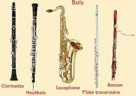
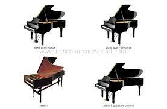
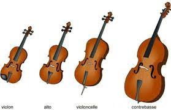
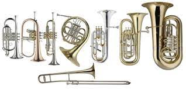

Les bois sont une famille d'instruments de musique à vent qui se caractérisent par
leur système d'émission du son constitué soit par un biseau comme les flûtes, soit par la vibration d'une anche simple
comme la clarinette ou double comme le hautbois.

Les Claviers
Le clavier est, en musique, et plus précisément en organologie,
un ensemble de touches que l'on enfonce à l'aide des doigts (soit d'une ou deux mains), pour jouer de certains instruments.
Sur certains d'entre eux, les orgues en particulier, un clavier spécial est actionné avec les pieds - on parle alors de pédalier.

Les Cordes
En musique, la corde est un fil de boyau, de soie, de nylon ou d'acier,
tendu sur le corps de certains instruments de musique, que l'on fait vibrer soit avec les doigts (cordes pincées)
soit avec un archet (cordes frottées) soit avec des marteaux (cordes frappées).

Les Cuivres
Tous les cuivres sont constitués d'un tuyau cylindrique ou conique qui
comporte une embouchure à une extrémité et un pavillon à l'autre. Les trompettes et les trombones sont cylindriques
sur les deux tiers de leur longueur et seule leur partie terminale est conique.

Les Percussions
Ensemble des instruments de musique que l'on frappe pour obtenir un son.
(Ce terme désigne aussi les instruments entrechoqués, secoués, raclés, pincés, etc. ; de ce fait, il a été abandonné
par les organologues au profit du terme « idiophone ».)